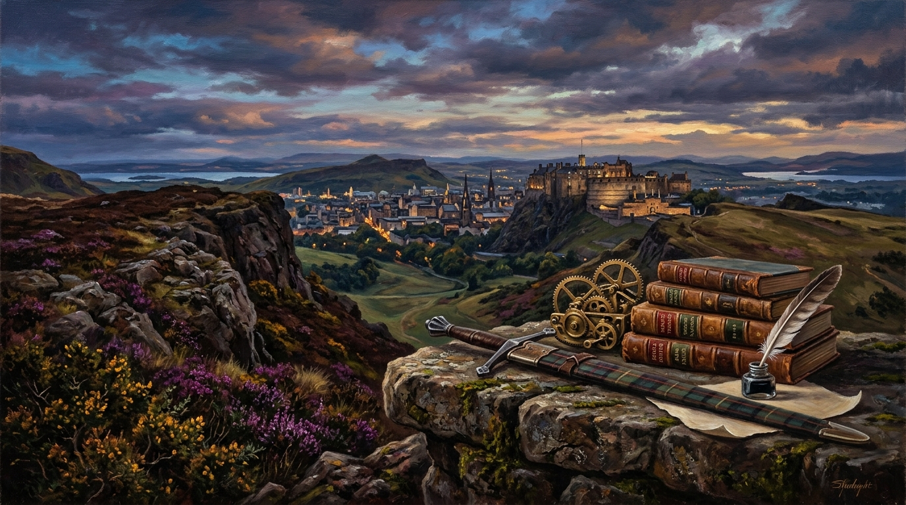

Great Scots: Six Lives That Shaped the World
The Claymore, the Steam Engine, and the Forge of the Modern Mind

“Their imaginations became reality, and their realities became legacies, but the meaning of those legacies is not fixed in history. Influence is a living force.” — Trevor Swistchew
The Six Titans of Scottish Thought & Global Transformation
Archival Research & Thematic AnalysisThomas Telford (1757–1834)
Born into poverty in Dumfriesshire; stonemason who became the premier civil engineer of the modern era, pioneering the Menai Suspension Bridge, Caledonian Canal, and thousands of miles of national arteries.
Robert the Bruce (1274–1329)
King of Scots who led the defence of national self-determination at Bannockburn (1314), enshrined forever in the 1320 Declaration of Arbroath.
Scotland is a land that has always carried more weight in the world than its size would suggest, a country forged in hardship, sharpened by wind and stone, and animated by a fierce sense of identity that refuses to be diminished. In 2026, when people speak of global influence, they often look to the largest nations, the wealthiest economies, the loudest voices. Yet the truth remains that some of the most profound shifts in human thought, culture, politics, and infrastructure were shaped by individuals who emerged from a country once dismissed as the poorest in Europe. These six Scots—Thomas Telford, Robert Burns, Flora MacDonald, Robert the Bruce, Adam Smith, and John Maclean—did not merely contribute to their own time; they altered the trajectory of the world. Their lives were not accidents of history but expressions of a deeper Scottish spirit: resilient, imaginative, rebellious, compassionate, and unyielding. To understand their influence is to understand how a small nation carved its mark into the global story, and why their legacies still matter in 2026.
Thomas Telford's life begins in the quiet humbleness that so often precedes greatness. Born into poverty in the rugged landscape of Dumfriesshire, he was not handed opportunity—he carved it out of stone. His early years as a stonemason taught him the language of materials, the patience of craft, and the discipline of precision. What set him apart was not simply skill but vision: the ability to see infrastructure not as cold engineering but as the lifeblood of a nation. Telford understood that roads, bridges, canals, and harbours were not inert structures; they were arteries through which commerce, culture, and human possibility flowed. His work across Britain and beyond transformed isolated regions into connected communities, enabling economic growth, social mobility, and national cohesion. In 2026, when people travel across bridges he designed or follow roads that trace his original routes, they are moving through the physical legacy of a man who believed that engineering was a moral duty. Telford's influence reaches into every modern conversation about infrastructure, reminding us that the built environment is not merely functional but foundational to human flourishing.
Robert Burns, by contrast, shaped the world not through stone but through language. His life was a testament to the power of the ordinary voice, the voice that rises from the soil rather than the throne. Burns was a ploughman, a farmer, a man whose hands were calloused by labour, yet his mind carried a sensitivity and insight that transcended his circumstances. He wrote not to impress the elite but to honour the dignity of common folk, capturing their joys, sorrows, humour, and humanity with a clarity that still resonates centuries later. Burns gave Scotland a literary identity that was both fiercely local and universally human. His poems and songs travelled across oceans, inspiring movements for social justice, national pride, and democratic ideals. In 2026, his words continue to echo in classrooms, political speeches, cultural festivals, and private moments of reflection. Burns's influence lies not only in his artistry but in his insistence that every human life, no matter how humble, carries worth. He democratized literature and, in doing so, he democratized the imagination of the world.
Flora MacDonald's story enters the narrative with a different kind of power: the quiet courage that emerges when compassion overrides fear. She is remembered most for her role in aiding the escape of Charles Edward Stuart after the failed Jacobite rising, a moment that has become mythic in Scottish history. Yet Flora's significance extends far beyond the romanticized image of a young woman guiding a fugitive prince through danger. Her actions were rooted in a profound sense of loyalty, humanity, and moral conviction. She risked her life not for political gain but because she believed in the duty to protect another human being. Flora's legacy is a reminder that heroism is not always loud or violent; sometimes it is the steady resolve to do what is right in the face of overwhelming risk. In 2026, her story continues to inspire discussions about moral courage, civil resistance, and the role of individual conscience in times of political turmoil.
Their imaginations became reality, and their realities became legacies, but the meaning of those legacies is not fixed in history. Influence is a living force, shifting as the world shifts, revealing new dimensions as new generations reinterpret the past. In 2026, the stories of these six Scots do not sit quietly on library shelves; they move through conversations about identity, justice, creativity, infrastructure, and the moral responsibilities of nations. Their lives are mirrors held up to the present, asking what kind of world we are building and what kind of people we choose to be within it.
Telford’s world was one of stone, water, and iron, yet his vision speaks directly to an age of digital networks and global interdependence. He believed that connection was the foundation of progress, that a nation thrives when its people can move freely, share ideas, trade goods, and reach one another without obstruction. In 2026, when societies grapple with fractured politics, strained economies, and the consequences of neglecting public infrastructure, Telford’s legacy becomes a challenge to build not for profit alone but for the common good. His bridges were acts of faith in the future, and that faith is something the modern world desperately needs to reclaim.
Burns, writing in the eighteenth century, could not have imagined the technologies of the twenty‑first, yet he understood something deeper than circumstance: the human need to be seen, heard, and valued. His poetry carries a democratic spirit that resonates in an age of global communication, where voices rise from every corner of the world demanding recognition. Burns’s insistence on the dignity of ordinary people speaks directly to movements that challenge inequality, authoritarianism, and cultural erasure. In 2026, his words are not relics; they are ammunition for those who refuse to accept a world where power is hoarded and humanity is divided.
Flora MacDonald’s courage, quiet and unwavering, becomes newly relevant in a time when moral action is often drowned out by noise, outrage, and performative gestures. She acted not for applause but because she believed in the sanctity of human life. Her story reminds the modern world that compassion is not sentimental but radical, that the willingness to protect another person at personal risk is the foundation of any society that claims to value justice. In 2026, when humanitarian crises unfold across continents, Flora’s legacy becomes a question: what does courage look like now, and who will embody it?
Robert the Bruce’s struggle for sovereignty echoes in a century defined by debates over national identity, self‑determination, and the right of people to shape their own political destiny. His endurance, his refusal to yield even when defeat seemed certain, speaks to nations and communities fighting for recognition, autonomy, and dignity. Bruce’s legacy is not a call to conflict but a reminder that identity is worth defending, that freedom is not an abstract ideal but a lived experience shaped by collective will. In 2026, his story becomes a lens through which the world examines its own fractures and aspirations.
Adam Smith’s insights into human behaviour and economic systems become sharper in a world grappling with inequality, automation, and the moral consequences of global capitalism. Smith understood that markets are not machines but human creations, and that without moral grounding they become destructive. His work challenges the modern world to rethink what prosperity means, who it serves, and how it can be shaped to reflect human values rather than distort them. In 2026, Smith’s legacy becomes a provocation to build economies that honour human dignity, not exploit it.
John Maclean’s fire for justice burns fiercely in a century marked by social movements, political upheaval, and demands for structural change. His belief that education liberates, that solidarity strengthens, and that oppression must be confronted directly speaks to activists, teachers, workers, and communities fighting for a fairer world. Maclean’s legacy is not a historical footnote; it is a living force that challenges complacency and insists that justice is not optional. In 2026, his story becomes a rallying point for those who refuse to accept inequality as inevitable.
What binds these six lives together is not simply nationality but a shared refusal to accept the world as it is. Each of them, in their own way, insisted on possibility. Telford insisted that nations could be connected. Burns insisted that voices could be heard. Flora insisted that compassion could triumph over fear. Bruce insisted that freedom could be won. Smith insisted that thought could reshape systems. Maclean insisted that justice could be demanded. Their insistence is the thread that runs through Scottish history—a thread woven from resilience, imagination, and moral conviction.
In 2026, Scotland stands not as a relic of past glories but as a nation whose influence continues to ripple outward through the lives of its people and the stories of its giants. The world looks to Scotland not for dominance but for depth, not for power but for perspective. These six lives offer that perspective: a reminder that greatness is not measured by wealth or territory but by the courage to act, the clarity to think, the compassion to care, and the resilience to endure.
Their stories matter now because the world is once again at a crossroads, facing challenges that demand more than technical solutions. They demand character. They demand imagination. They demand the kind of moral courage that Flora embodied, the kind of intellectual clarity that Smith offered, the kind of creative fire that Burns ignited, the kind of structural vision that Telford built, the kind of political endurance that Bruce demonstrated, and the kind of social conviction that Maclean lived and died for. These qualities are not bound to the past; they are the tools with which the future must be shaped.
Scotland, once dismissed as the poorest country in Europe, produced individuals whose influence rivals that of empires. Their stories are proof that greatness emerges not from comfort but from struggle, not from privilege but from purpose. In 2026, their legacies stand as a challenge to every nation and every individual: what will you build, what will you imagine, what will you defend, what will you change?
The world they helped shape is still being shaped. Their work is not finished. Their influence is not spent. Their stories are not closed. They are invitations to courage, to clarity, to compassion, to justice, to imagination, to resilience. In answering those invitations, the world honours not only their memory but its own potential.
Their imaginations became reality, and their realities became legacies, but the meaning of those legacies is not fixed in history.